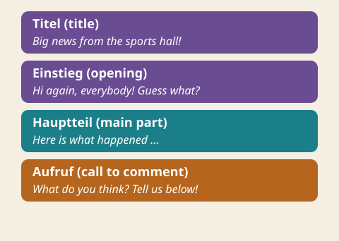

Einen Blogbeitrag schreiben
Mit einem KI-Tutor lernen
Ein KI-Tutor erklärt dir diese Seite und hilft dir bei den Aufgaben. Wähl deinen Assistenten:
Mit Claude öffnen Mit ChatGPT öffnen Mit Mistral Vibe öffnen
Du nutzt dein eigenes Konto beim Anbieter. Der Assistent ist kein Angebot von lernapps.net: lernapps liefert nur Inhalte und Aufgaben. Die Wahl gilt für alle Seiten, nur auf diesem Gerät.
Worum es geht
Sophie hat der Klasse die Schülerzeitung vorgestellt. Jetzt erzählt sie davon auf dem Schulblog. Ein Blog ist ein Online-Tagebuch, das alle lesen können. Unter dem Beitrag können Leser einen Kommentar schreiben. Danach kannst du einen Blogbeitrag oder einen Kommentar unter einem Beitrag schreiben.
Aufgabe
Lösung
Dear Sir or Madam, I am writing to inform you about my hobby
So beginnt ein formaler Brief an ein Büro. Auf einem Blog schreiben Mitschüler an Mitschüler.
A hobby is something that people do in their free time
Das klingt wie ein Lexikon. Ein Blog hat eine persönliche Stimme: Du erzählst von dir.
Hi everyone! I have some news about my new hobby richtige Antwort
Richtig: Du sprichst die Leser locker an und erzählst von dir.
Ein Blogbeitrag beginnt locker und persönlich.
Lesestück · Der Blog der Schule
Lies Sophies Blogbeitrag und die Kommentare darunter in drei Abschnitten. Der Inhalt ist derselbe wie in ihrem Vortrag. Die Zahlen vor den Zeilen brauchst du bei den Aufgaben. Schwere Wörter stehen hier.
| Englisch | Deutsch |
|---|---|
| title | der Titel |
| issue | die Ausgabe |
| puzzle | das Rätsel |
| tricky | schwierig, knifflig |
| forum | das Forum |
| reply | die Antwort, antworten |
- Our school newspaper is on its way!
- Hi everyone! Last Thursday we had the very first meeting of the newspaper team, and I'm still excited about it.
Aufgabe
Lösung
Über das erste Treffen des Zeitungsteams richtige Antwort
Richtig: Zeile 2 nennt das erste Treffen des Teams.
Über den Verkauf der fertigen Zeitung
Die Zeitung gibt es noch nicht. Sophie schreibt vom ersten Treffen.
Über ein Treffen der ganzen Schule
In Zeile 2 steht the newspaper team, nicht die ganze Schule.
Der Einstieg sagt, worum es geht.
- So what's the plan? Every issue will have a news page, an interview with a teacher and a page full of puzzles. Ellie is going to write about a school garden, Amir will ask a teacher some tricky questions, and Peter is drawing the puzzles. There are four of us, and Mr Hill helps us.
- The first issue comes out in four weeks. After that, there will be a new one every month. Cool, right?
- Now it's your turn! Do you have an idea for the paper? Write a comment below or put a note in the box next to the library door. We read everything!
- Sophie
Aufgabe
Lösung
Richtige Antwort: Zeile 1 – Titel; Zeile 2 – Einstieg; Zeile 3 – Hauptteil; Zeile 5 – Aufruf zum Kommentieren
Der Titel steht oben, der Einstieg begrüßt die Leser, der Hauptteil erzählt die Neuigkeiten und der Aufruf am Ende bittet um einen Kommentar.
- Comment from Ellie: Hi Sophie, great post! You wrote that there will be a puzzle page. Can we have a joke of the week too? I think the readers would love it.
- Reply from Sophie: Good idea, Ellie! I'll ask Mr Hill on Thursday. Thanks for the comment!
Aufgabe
Lösung
Sie schreibt einen eigenen Titel
Ein Kommentar hat keinen eigenen Titel. In Zeile 7 steht auch keiner.
Sie fängt mit Dear Sophie an
Zeile 7 beginnt mit Hi Sophie. Und eine Anrede allein zeigt noch keinen Bezug.
Sie nennt die Rätselseite aus dem Beitrag richtige Antwort
Richtig: Die Rätselseite steht in Zeile 3 des Beitrags. Ellie greift sie auf.
Ein guter Kommentar nennt etwas aus dem Beitrag und fügt dann eine eigene Idee hinzu.
Der Bauplan eines Blogbeitrags

© CC-BY-4.0Der Bauplan eines Blogbeitrags von oben nach unten gelesen. Die Beispielsätze gehören zu einem anderen Beitrag als Sophies.
Ein Blogbeitrag hat vier Teile. Du schreibst in der Ich-Form und informal, denn die Leser sind Mitschüler.
- Titel: kurz, er macht neugierig.
- Einstieg (die Einleitung des Beitrags): ein bis zwei lockere Sätze. Du sprichst die Leser an und sagst, worum es geht.
- Hauptteil: die Neuigkeiten in kurzen Absätzen (paragraphs).
- Aufruf: Du fragst die Leser nach ihrer Meinung und bittest um einen Kommentar.
Ein Kommentar unter dem Beitrag hat drei Teile: einen lockeren Gruß, einen Bezug auf den Beitrag und deine eigene Idee oder Frage.
Merke
Ein Blog klingt wie du. Ein Kommentar zeigt erst auf den Beitrag und bringt dann deine Idee.
Übung
Aufgabe
Lösung
Dear readers, here is a text about the reading corner
Ein Gruß gehört in den Einstieg, nicht in den Titel. Der Titel soll kurz sein.
Reading corner
Das ist kurz, aber es sagt wenig. Ein guter Titel macht neugierig.
Come and see our new reading corner! richtige Antwort
Kurz, locker und mit einer Einladung: So macht ein Titel neugierig.
Ein Blog-Titel ist kurz und lädt zum Lesen ein.
Aufgabe
Der Entwurf für den Blog über die Leseecke ist zu formal. Schreibe jeden Satz locker, mit Kurzform oder lockerem Gruß.
Tipp
Schreibe so, wie du es Freunden sagen würdest. Kurz und persönlich.
- I am very happy about the new reading corner.
- We do not have enough chairs yet.
- Dear readers, I would like to welcome you.
Lösung
- I'm so happy about the new reading corner. (auch richtig: I'm very happy about the new reading corner.; I'm really happy about the new reading corner.)
- We don't have enough chairs yet.
- Hi everyone (auch richtig: Hi everybody; Hi all; Hi there; Hello everyone; Hello everybody; Hello all; Hello there; Hey everyone; Hey everybody; Hey all; Hey there)
Ein Blog klingt locker. Kurzformen und ein lockerer Gruß helfen dabei.
Aufgabe
Setze die Wörter in den Kommentar ein. Du kennst sie aus den Zeilen 7 und 8.
Tipp
Ein Kommentar dankt, zeigt auf den Beitrag und stellt dann eine Frage oder bringt eine Idee.
- Danke für deinen Beitrag! → … for your post!
- Du hast geschrieben, dass es ein Rätsel gibt. → You … that there is a puzzle.
- Können wir auch einen Witz der Woche haben? → … we have a joke of the week too?
Lösung
- Thanks for your post!
- You wrote that there is a puzzle.
- Can we have a joke of the week too?
Dank, Bezug auf den Beitrag und eine Frage machen einen guten Kommentar.
Aufgabe
Höre den Satz und schreibe ihn auf.
- KI
- KI
- KI
Lösung
- Use your own voice in every paragraph.
- Readers like a short and friendly title.
- Ask your readers to leave a comment.
Die Sätze geben Tipps für einen guten Blogbeitrag.
Selbst schreiben
Aufgabe
Höre die Sätze und sprich sie nach. So klingt ein lockerer Blog.
- Hi everybody, here is some news from the library.KI
- Please tell me what you think about the idea.KI
- Thanks for reading, and have a lovely weekend.KI
Zum Aufnehmen braucht diese Aufgabe JavaScript. Die Beispiele kannst du auch ohne anhören.
Lösung
- Hi everybody, here is some news from the library.
- Please tell me what you think about the idea.
- Thanks for reading, and have a lovely weekend.
Offene Aufgabe
Vergleiche den Plan in Sophies Vortrag (Zeile 4) mit dem Plan im Blogbeitrag (Zeile 3). Welche Fassung gefällt dir besser, und warum? Schreibe zwei bis drei Sätze auf Englisch.
Eine gute Antwort enthält:
- Du nennst eine Fassung, Vortrag oder Blogbeitrag. Nachlesen
- Du gibst einen Grund mit because. (Form)
- Du schreibst in ganzen Sätzen. (Form)
Lösung
I like the blog post better because it sounds like a friend. The talk is clear, but it is more serious. Die App bewertet deinen Text nicht. Vergleiche ihn mit den Punkten.
Offene Aufgabe
Wähle eine Aufgabe. Entweder schreibst du einen kurzen Blogbeitrag mit vier bis sechs Sätzen über eine neue Idee für die Schülerzeitung. Oder du schreibst einen Kommentar zu Sophies Beitrag.
Eine gute Antwort enthält:
- Der Blogbeitrag hat Titel, Einstieg, Hauptteil und Aufruf. Der Kommentar hat Gruß, Bezug auf den Beitrag und eine eigene Idee oder Frage. Nachlesen
- Du schreibst locker und persönlich, mit Hi und mindestens einer Kurzform. (Form)
- Der Blogbeitrag bittet um einen Kommentar, oder der Kommentar stellt eine Frage. Nachlesen
- Du schreibst in ganzen Sätzen. (Form)
Lösung
Blog post:
A photo page for our paper?
Hi everyone! I've got a new idea for the newspaper. What about a photo page?
Every month we could show three photos of school life. You can send us your best pictures, and we choose the winner.
What do you think? Leave a comment and tell me!
Or comment:
Hi Sophie, I like your idea! You said that students can send pictures. Can they send drawings too?
Die App bewertet deinen Text nicht. Vergleiche ihn mit den Punkten.
Wie es weitergeht
Du kannst jetzt gliedern, den Ton wählen, einen Vortrag halten und bloggen. Im nächsten Kapitel schreibst du Berichte und Interviews für die Schülerzeitung.
Fehler gefunden oder eine Idee für diese App?